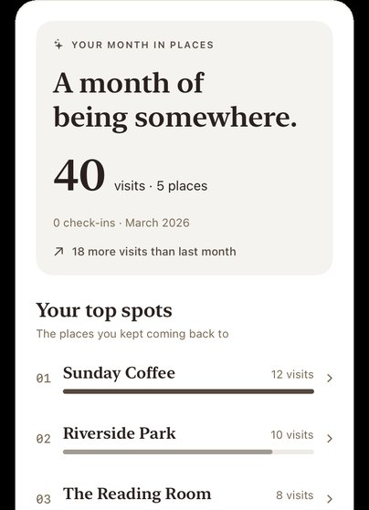

I work on knowing when AI agents are wrong, and I build software people can use.
I’m in my third year of a computer science degree at the University of Wisconsin–Madison (GPA 3.96, Honors in Major, Dean’s List). My research asks how an AI agent, or a team of them, can tell when it has made a mistake, and how it can keep a memory it can trust. My other work is products I take from idea to something running: a diary app for iPhone and web, a tool for working on remote servers, and browser extensions.
Research
One question runs through all three: how does an AI system know what it got wrong, and what should it remember?
A warning light for AI agents
Active, June to August 2026 DACS-AUQ
An AI agent finishes a task in many small steps: look something up, click a button, run a command. Sometimes step 6 quietly goes wrong and everything after it is wasted. I wanted a warning light that comes on before a bad step is taken.
The obvious fix is to ask the agent how sure it is. I found that this doesn’t work well: what “sure” means changes from one model to the next. So I use a separate, fixed model as an inspector. It watches every step of any agent and gives it a trust score, like a second pair of eyes that doesn’t share the agent’s blind spots.
Tested on 62,065 steps from agents doing household tasks in a text world (ALFWorld) and answering multi-part questions (HotpotQA).
The inspector caught mistakes better than the agents’ own self-checks in 9 of 11 settings, at about 1/100 the cost of using GPT-4o as the judge.
It can pick when to raise the alarm for a new agent without needing any labelled mistakes from that agent.
I kept the experiments that failed and reported them.
Finding the step where a team of AI agents went wrong
In progress, at Yonsei University, since June 2026 SURF
When several AI agents work together and the job fails, someone has to work out which step actually broke it. Reading the whole transcript with a giant model is expensive. Training a special model needs a lot of examples of labelled failures.
My idea is to use a small model that scores every step by how likely it is to be fine, and not to round that score to yes or no. A step rated 51% and a step rated 91% both round to “yes”, but they are very different. Keep the numbers, rank the steps, and the shakiest one is the likely culprit. No extra training and no labelled failures needed.
Being tested on Who&When, a public collection of failed multi-agent runs where humans marked the culprit step.
Compared against methods that need a large judge model or extra training, on accuracy and on cost.
Experiments are still running, so I am not quoting results yet.
Memory for an AI assistant, kept as one document it edits
Completed, spring 2026 EngramTrace
Chat assistants forget. The usual fix, retrieval, chops knowledge into separate snippets and searches them, which loses how the ideas relate. I tried something closer to a well-kept notebook: everything the assistant knows lives in a single organized web document with chapters and sections. As conversations come in, the assistant files new facts in the right place, removes what’s out of date, and, after a long idle stretch, tidies the whole notebook, a bit like sleep does for us.
Because it is one document, the assistant sees the whole structure at once and can place new knowledge in a fixed number of model calls, instead of adding facts one link at a time.
A note is found partly by where it sits: each one carries some of the meaning of the headings above it, so the same sentence means different things under “Login” and under “Data formats”.
You can open the memory in any browser and read or correct it yourself.
Tested on all 2,417 questions of MuSiQue, a hard multi-step question benchmark, feeding every passage through the live memory first. Result: 0.646 answer F1 and 0.515 exact match, with open models on a single GPU. Side-by-side comparisons with plain retrieval baselines are still to come.
Each one says whether it’s released, still being built, or set aside.
Fethr, a diary that starts with no rules
In beta, built since July 2026 fet.hr
Most journaling asks you to write something worth publishing before it saves anything, so most small moments never get saved: a sentence you thought on a walk, a photo that caught a mood, the café you stepped into. Fethr turns that around. Record first, shape it later. You drop in tiny pieces, a line of text, photos, a place, a voice note, and they land on one private timeline with no title and no form. Weeks later, if you want, you group them into an event, start a blog entry from them, or arrange them on a pinboard. None of it is ever required.
Private by default. The timeline has no likes, comments or audience. Only what you deliberately write or broadcast reaches anyone.
No blank page. Select moments from your timeline and they become the first draft of a blog entry.
A pinboard like a room you decorate. Move, resize and rotate photos, text and stickers. You can hand a friend a link, with a guestbook and a soundtrack.
Share a day, not a feed. A broadcast lets close friends walk through your day for 24 hours, then it disappears.
Works offline, has Home Screen widgets, and speaks English and Korean.

The monthly places summary on iPhone (demo data)
Designed and built by me for iPhone (SwiftUI) and web (Next.js), on Supabase and Postgres. Over 2,300 automated tests.
Live Git, a whole GPU server bolted to your laptop
Released and open source, June to August 2026 lg
Working on a GPU server usually means logging in over SSH, copying files back and forth, and babysitting long training runs. Live Git fixes the three worst parts of that, so the server feels like part of your laptop.
Run anything there. Type lg in front of a command and it runs on the server, with live output, colours, progress bars and Ctrl-C, exactly as if it were local.
Edit here.lg mount makes the server’s whole project appear as a normal folder, instantly, even for huge ones. Files download when you open them, and saves reach the server in milliseconds.
Leave long runs alone.lg run -d detaches a job so it keeps going when your laptop sleeps or the connection drops. Pick up the logs later.
Made for AI agents too. A coding agent can’t answer a two-factor login prompt or live inside a remote shell. Live Git gives it real local files to read and edit and one command to run things on the server. lg init even writes an instruction file so the agent knows how to use it from its first prompt, and the whole loop of fix, retrain and read the results can run without a person in the middle.
Built with Go, FUSE and SSH. Installs with one Homebrew command; 29 releases so far.
When you read, your eyes reach the end of a line and swing back to the start of the next. This Chrome extension slides the text past a fixed marker as you scroll sideways, so your eyes stay in one place. It works on any web page.
Badger Course Watch, a nudge when a full class opens
Released, November 2025 to April 2026
A Chrome extension for UW–Madison students. Pick the classes you want, and it tells you when a seat opens. It can also add your schedule to a calendar.
A Korean website that watches online communities and news, works out which topics are heating up, and writes a short explanation of the story behind each one. To keep the summaries honest, I used a small model tuned to stick closely to the scraped text.
Built with Next.js, FastAPI and PostgreSQL.
RealReview, restaurant ratings as a temperature
Prototype, July 2026
Five-star ratings are inflated, so nearly every place scores 4.5. RealReview shows each restaurant on a map with a 0 to 100 temperature, cold blue to hot red. A rating takes one tap.
Reads Korean blog and social posts, uses an AI model to pull out which places people mention and how they feel about them, and ranks Seoul venues by how fast their buzz is growing. I designed it to keep AI costs low by batching posts and skipping ones it has already seen.
Built with Python, FastAPI and Gemini. The code is private.
Works out where a camera is looking by matching what it sees to a reference image.
AdaptiveSimulation prototype
Several AI agents that each see only part of the information, so they don’t all rush to the same answer.
InfiniteRace prototype
A racing game concept on real-world roads, where an image-generating model paints the scenery as you drive.
Experience
June 2026 to now
Undergraduate research intern
Yonsei University, Seoul
Developing SURF, a way to find the failing step in a multi-agent system without any training, and testing it on Who&When against published methods. I also collected failed runs from several multi-agent frameworks.
June to August 2026
Undergraduate researcher
University of Wisconsin–Madison
Built and tested the agent warning light described above, on about 30,000 labelled steps from six model families. Showed that agents’ own confidence signals do not carry over between models or tasks.
February to May 2026
Research project: EngramTrace
University of Wisconsin–Madison
Designed, built and evaluated the notebook-style memory system described above, working alone.
September 2023 to March 2025
C4I systems specialist, Sergeant
Republic of Korea Army, Paju
Ran the army’s satellite, radio and fiber networks and its Linux and Windows servers on a defense network. I turned recurring chores into small tools: one script to check every unit PC’s security settings, an intranet-only way to distribute patches, and a single combined notice popup that replaced ten stacked ones and that non-programmers could edit.
November 2022 to January 2023
Research assistant
Last-Mile Delivery Living Lab, Yonsei University
Studied why an autonomous delivery robot failed on real streets, then reprogrammed its sensors and controllers so it planned paths and avoided obstacles better.
Chosen by audition among 24 Korean and Chinese students. Proposed a platform that connects Korean shoppers directly with Chinese factories, led the Flutter demo and wrote the marketing plan.
Education and skills
Expected May 2027
B.S. Computer Science
University of Wisconsin–Madison
GPA 3.96 out of 4.00. Dean’s List. Honors in Major.
Courses include Introduction to AI (Honors), Advanced Data Structures and Algorithms, Discrete Mathematics and Computer Systems, and Linear Algebra and Applied Probability.
2024
AI Expert Training Course
KAIST IT Academy
Data analysis, statistics and machine-learning theory, with hands-on neural networks.
2024
Army Startup Competition, participant
Team AARN
Proposed a network of AI-controlled relay nodes that keeps communications working when infrastructure is lost, and built a reinforcement-learning demo in Keras.